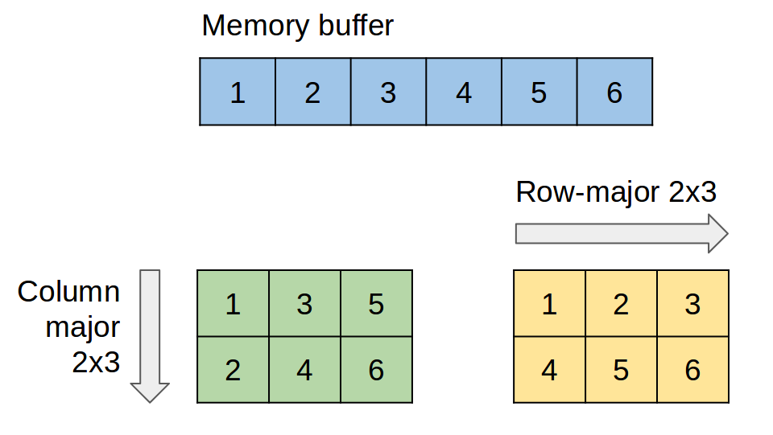

BLAS (Basic Linear Algebra Subprograms) is a library of basic vector and matrix operations. Originally written in Fortran, it has bindings for C and other languages. There are multiple implementations of this library, such as OpenBLAS, Intel Math Kernel Library (MKL), cuBLAS from Nvidia, just to name a few.
Let's explore "general matrix multiplication" (gemm) API.
The "gemm" operation is defined as
C(m,n) = alpha * A(m,k) * B(k,n) + beta * C(m,n)
Where
C API, also called "CBLAS", defines this operation as follows.
Note that there are few versions of this function, such as "sgemm" (single-precision), "dgemm" (double-precision), "cgemm" (single-precision complex), and "zgemm" (double-precision complex).
As you can see from cblas_sgemm() method signature, matrices are passed as float pointers. A pointer is just an address of a linear memory buffer. There are two methods for storing multi dimensional data in a linear storage - row-major or column-major.
In a column-major order, the consecutive elements of a column reside next to each other, whereas in a row-major order, the consecutive elements of a row reside next to each other.
First parameter in cblas_sgemm() specifies row-major or column-major order. Not all BLAS implementations let you choose memory layout for matrices. Original Fortran implementation or cuBLAS from Nvidia are column-major only.